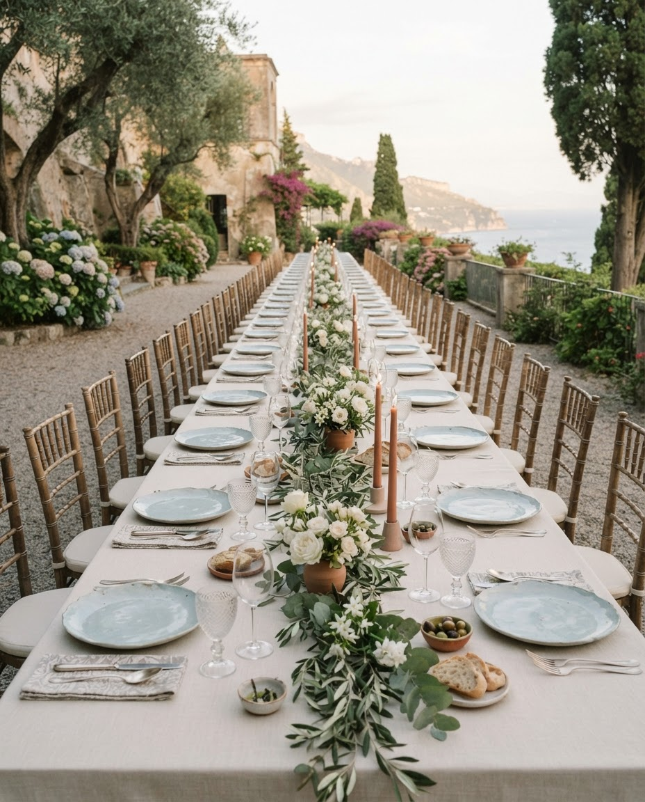

Per le wedding planner
Tutti i matrimoni, in un unico spazio.
Una dashboard per più eventi, con budget, fornitori, scadenze, documenti e un portale condiviso con gli sposi. Per le prime 10 planner in Campania la prova pilota è gratuita.
Prova pilota gratuita · Per le prime 10 planner in Campania
01 / Il coordinamento
Il lavoro a colpo d'occhio
Una dashboard pensata per più eventi.
Budget, fornitori, scadenze e documenti in un unico spazio. Non è un'agenzia: è uno strumento per chi coordina più matrimoni contemporaneamente.
| Evento | Data | Fornitori | Pagato sul budget |
|---|---|---|---|
| Chiara e Marco | 12 giu 2027 | 7 di 9 | 28% pagato |
| Anna e Luca | 4 lug 2027 | 5 di 8 | 34% pagato |
| Sara e Paolo | 18 set 2027 | 2 di 8 | 12% pagato |
| Giulia e Andrea | 2 ott 2027 | 1 di 8 | 6% pagato |
- 10:30Arrivo degli invitatiWedding planner
- 11:00CerimoniaCelebrante
- 12:30Foto di gruppoFotografo
- 13:30Aperitivo in giardinoCatering
- 20:00CenaCatering
- 23:30Taglio della tortaSposi
Cosa cambia
Cosa cambia per la tua organizzazione.
- Template duplicabili
- Checklist, budget e scaletta da riusare a ogni nuovo evento.
- Portale per gli sposi
- Gli sposi vedono ciò che condividi, con budget, scadenze e documenti nello stesso spazio.
- Acconti e saldi per evento
- Chi ha pagato cosa e cosa scade questa settimana, su tutti gli eventi.
- Scaletta condivisa
- Orari e responsabili del giorno, da mandare a fornitori e collaboratori.
- Collaboratori con ruoli
- Ognuno vede e modifica solo ciò che gli compete.
Nozze in Ordine comincia dove finisce la trattativa: dall'incarico firmato al giorno del sì.

Ruoli e collaborazione
Chi vede e modifica cosa.
Ogni persona vede e modifica solo ciò che le compete. Le note interne restano tue.
| Nello spazio condiviso | La planner | Gli sposi |
|---|---|---|
| Preventivi | Li carica e li gestisce | Li confrontano e approvano |
| Scadenze | Le assegna | Completano le loro |
| Documenti | Li carica | Li leggono e scaricano |
| Note interne | Le scrive e le legge | Non le vedono |
La prova pilota
Costruito sul tuo metodo.
Le prime 10 planner in Campania usano Nozze in Ordine sui loro matrimoni, gratis per tutta la prova pilota. Ogni mese ci dicono cosa serve, e lo strumento cresce intorno al loro lavoro.
Raccontaci il tuo metodo
Candidati alla prova pilota.
Cerchiamo le prime 10 wedding planner in Campania per costruire lo strumento insieme. È gratuita per tutta la sua durata: il prezzo dopo lo decidiamo insieme.
Nessun pagamento, nessun impegno.